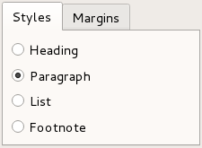
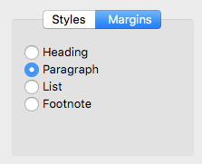

Qt Widgets
The Qt Widgets Module provides a set of UI elements to create classic desktop-style user interfaces. See the User Interfaces overview for more information on using widgets.
Widgets
Widgets are the primary elements for creating user interfaces in Qt. Widgets can display data and status information, receive user input, and provide a container for other widgets that should be grouped together. A widget that is not embedded in a parent widget is called a window.

The QWidget class provides the basic capability to render to the screen and to handle user input events. All UI elements that Qt provides are either subclasses of QWidget or are used in connection with a QWidget subclass. To create custom widgets, subclass QWidget or a suitable subclass and reimplement the virtual event handlers.
Styles
Styles draw on behalf of widgets and encapsulate the look and feel of a GUI. Qt's built-in widgets use the QStyle class to perform nearly all of their drawing, ensuring that they look exactly like the equivalent native widgets.
|  |  |

Qt Style Sheets are a powerful mechanism that lets you customize the appearance of widgets, in addition to what is already possible by subclassing QStyle.
Layouts
Layouts are an elegant and flexible way to automatically arrange child widgets within their container. Each widget reports its size requirements to the layout through the sizeHint and sizePolicy properties, and the layout distributes the available space accordingly.
|
|


Qt Designer is a powerful tool for interactively creating and arranging widgets in layouts.
Model/View Classes
The model/view architecture provides classes that manage the way data is presented to the user. Data-driven applications which use lists and tables are structured to separate the data and view using models, views, and delegates.

Graphics View
The Graphics View Framework is for managing and interacting with a large number of custom-made 2D graphical items, and a view widget for visualizing the items, with support for zooming and rotation.

Using the Module
Using a Qt module's C++ API requires linking against the module library, either directly or through other dependencies. Several build tools have dedicated support for this, including CMake and qmake.
Building with CMake
Use the find_package() command to locate the needed module component in the Qt6 package:
find_package(Qt6 REQUIRED COMPONENTS Widgets)
target_link_libraries(mytarget PRIVATE Qt6::Widgets)
For more details, see the Build with CMake overview.
Building with qmake
To configure the module for building with qmake, add the module as a value of the QT variable in the project's .pro file:
QT += widgets
Articles and Guides
- Widgets Tutorial
- Getting Started Programming with Qt Widgets
- Creating a Qt Widget Based Application
- Model/View Tutorial
Examples
API Reference
Module Evolution
Changes to Qt Widgets lists important changes in the module API and functionality that were done for the Qt 6 series of Qt.
Licenses
The Qt Widgets module is available under commercial licenses from The Qt Company. In addition, it is available under free software licenses: The GNU Lesser General Public License, version 3, or the GNU General Public License, version 2. See Qt Licensing for further details.